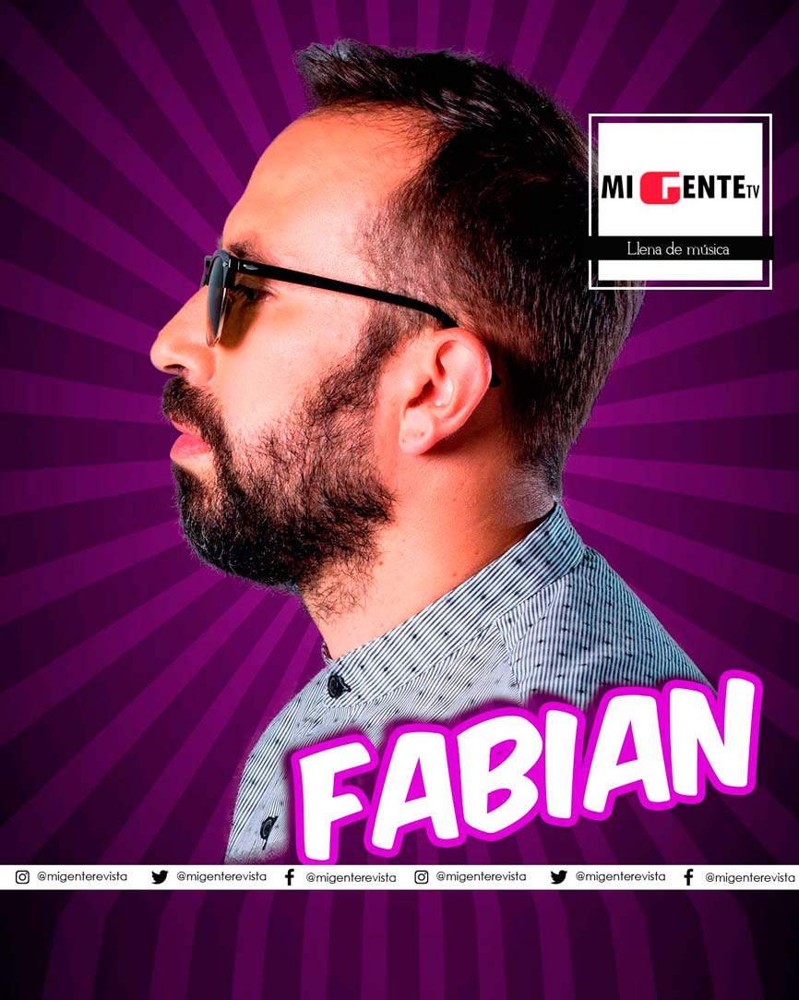
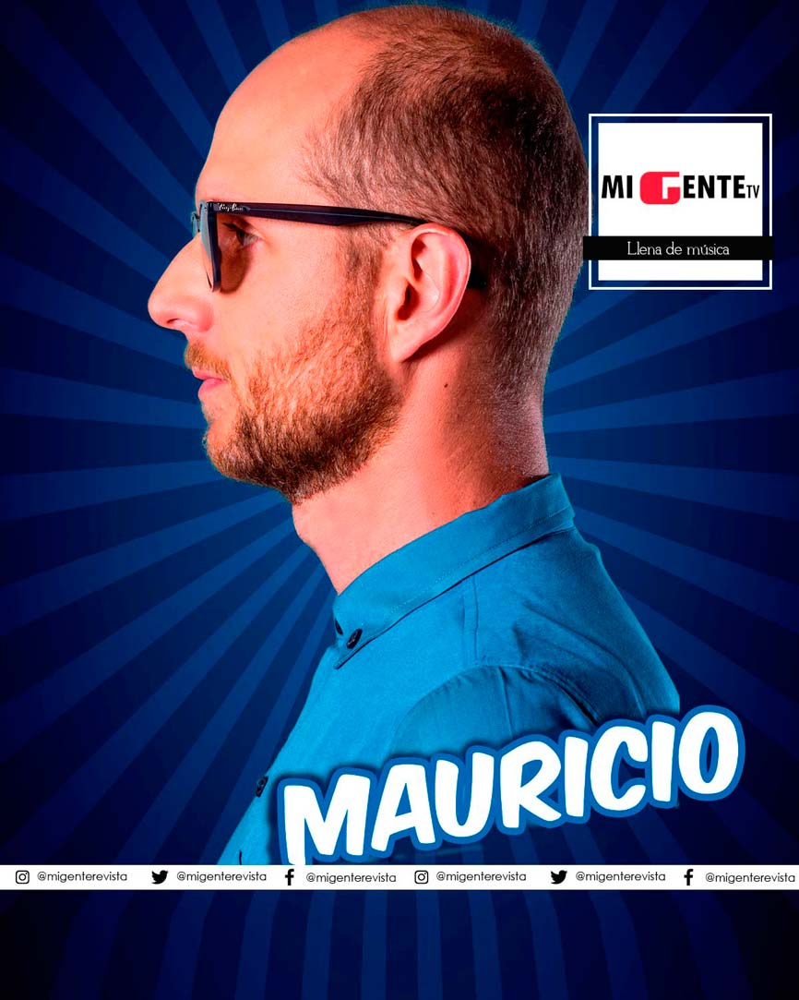
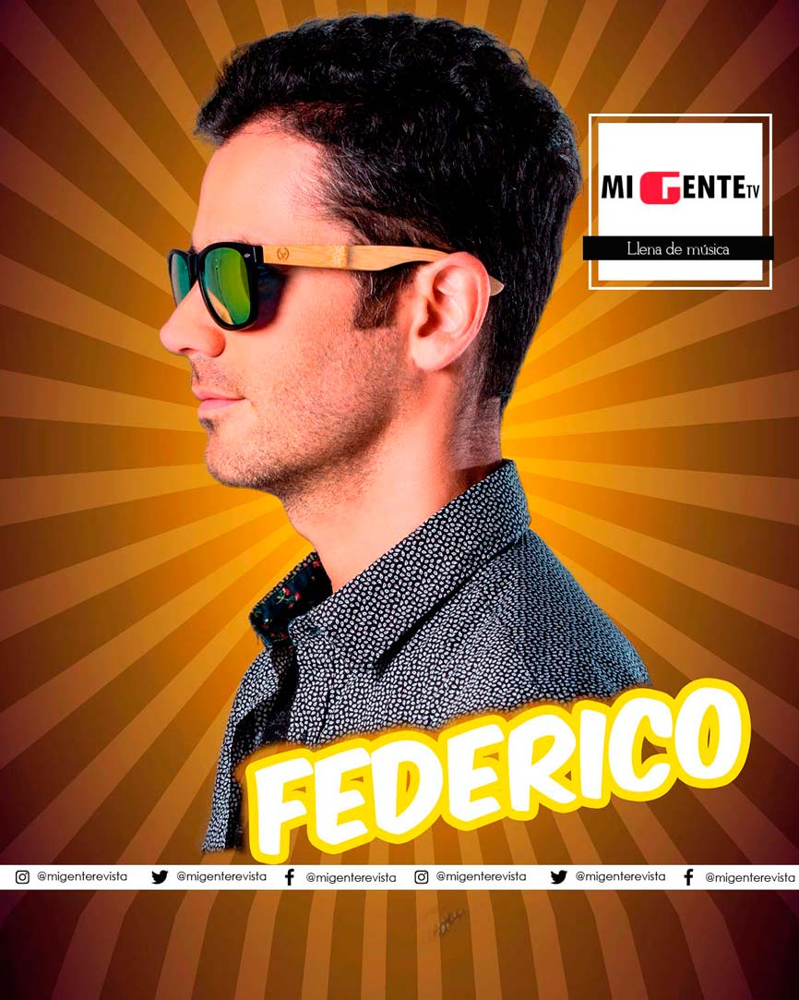
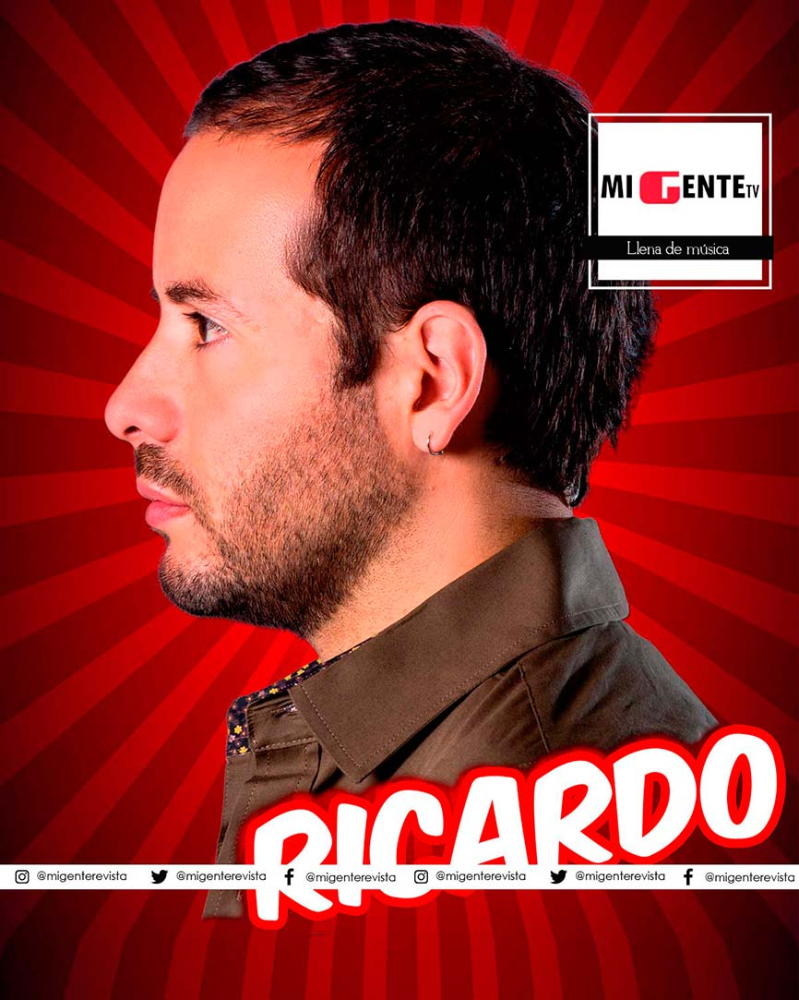

Sanalejo
“Mi mitad”, el nuevo trabajo discográfico.La agrupación manizalita estrenó el pasado 20 de enero el video de su más reciente sencillo –Mi mitad– que fue grabado en la edición 61 de la Feria de Manizales.
Este homenaje que Sanalejo le hizo a su tierra natal, estuvo lleno de anécdotas para nunca olvidar, una de ellas fue la erupción (de ceniza) del volcán en plena grabación, la gripe que sufrieron algunos de los integrantes por las bajas temperaturas y los días pasados por lluvia, sin embargo, se logró lo esperado.
Ahora si quiere comprobar lo que le digo, diríjase a YouTube y disfrute del video que muestra la carrera 23, la catedral, el cable y el Nevado del Ruíz, que fueron los escenarios principales de este trabajo que se rodó durante cuatro días, bajo la dirección del reconocido director uruguayo Julio Sonino quien viajó desde Miami para lograr plasmar en imágenes lo que querían los integrantes de Sanalejo, producir un video que traspase fronteras y muestre al mundo cómo se vive la feria más importante de América.
A la felicidad de estrenar sencillo, se le suma la inmensa alegría y satisfacción que les generó el haber sido nominados a los Grammy 2017, un sueño hecho realidad para este grupo colombiano, quienes jamás se imaginaron que luego de haber estado separados por 6 años iban a volver con pasos agigantados.
Por ahora, Sanalejo seguirá trabajando duro con todo lo nuevo que trae para esos fieles seguidores, –Mi mitad– está en el radar de los colombianos, y esta es tan solo la tercera producción del álbum “Seguir latiendo” que se perfila para ser uno de los más exitosos del año.
No olvide seguirlos en sus redes sociales como @SanAlejo.Oficial y enterarse de las últimas noticias del grupo y de cada uno de sus integrantes.
Integrantes y su mitad:
-
Fabian (Saxofón)
Familia. -
Mauricio (Batería)
Todo se complementa, el trabajo, la familia, la parte profesional, espiritual. -
Sebastián (Voz)
Familia, energía, espiritualidad, amor.
-
Federico (Guitarra)
Familia, música, el poder apreciar cada experiencia por las que pasa. -
Ricardo (Saxofón)
Familia, amor y música.